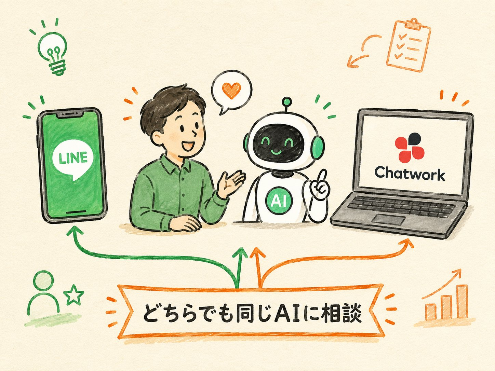
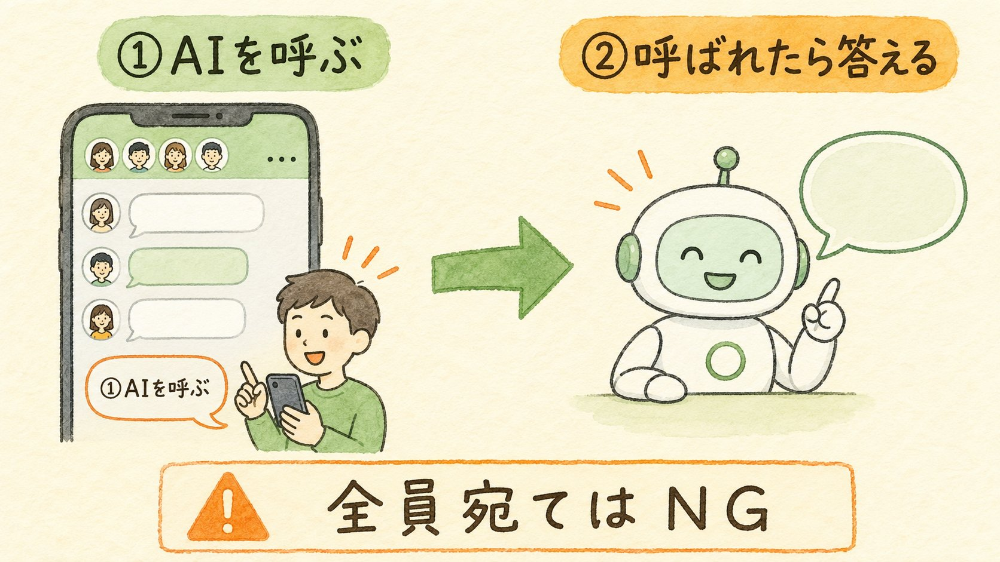
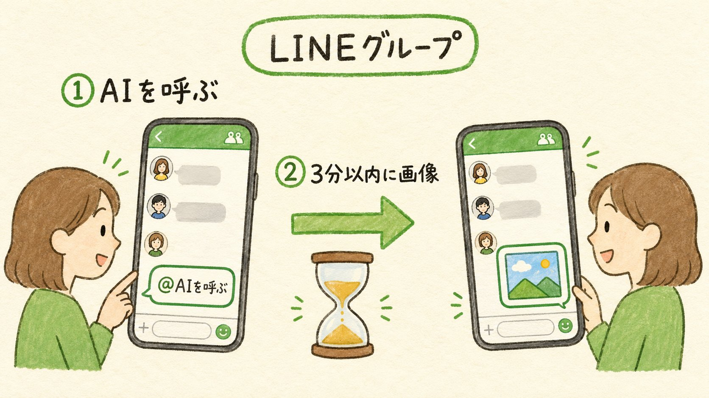
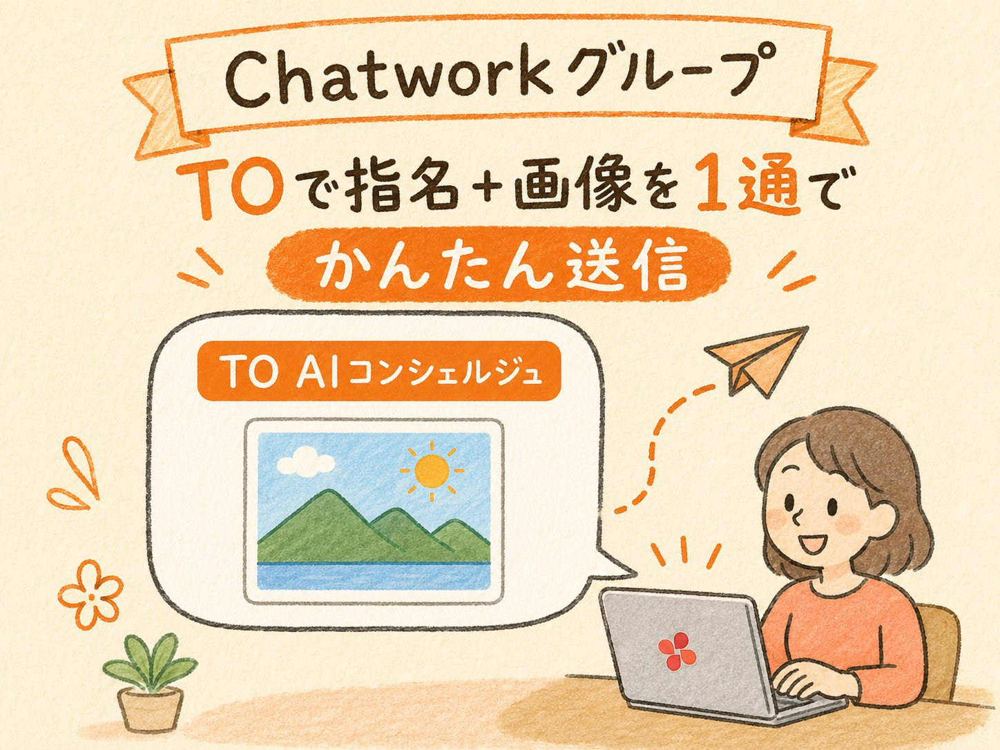

LINE と Chatwork で、AIコンシェルジュに質問・相談を送るだけ。写真やスクショを見てもらうこともできます。このページはお客様への説明にそのままお使いいただけます。

LINE でも Chatwork でも、話しかけるのは同じ「AIコンシェルジュ」です。
LINE でも Chatwork でも、やり方は同じ。友だち追加した AI と、ふだんの会話のように送るだけです。
LINEなら友だち一覧から、Chatworkならダイレクトチャットから。
「請求書の書き方は？」「この文章を丁寧にして」など、ふつうの言葉でOK。
そのまま会話を続けられます。前の話も覚えています。
💡 ポイント：かしこまらなくてOK。困りごとをそのまま送ってください。
エラー画面のスクショ、書類の写真、ホワイトボードのメモなどを送ると、AIが中身を読んで答えます。
グループでは、AIは勝手に割り込みません。呼ばれたときだけ反応します。呼び方と画像の送り方が LINE と Chatwork で少し違うので、それぞれ説明します。

左が LINE、右が Chatwork。並べて見比べられます。呼び方も、画像の送り方も、少しだけ違います。

入力欄で「@」→「AIコンシェルジュ」を選ぶ。または文章に AIQ と入れて送る。
一度呼べば、続けて会話できます。
先に @メンション（または AIQ）で呼び、3分以内に写真・スクショを送る。LINEは画像に宛先を付けられないため、この順番が必要です。

メッセージにマウスを合わせて「返信」/「TO」で「AIコンシェルジュ」を指定。または文章に AIQ と入れる。
指名されたAIが返信します。
Chatworkは1通に宛先(TO)と画像を一緒に付けられます。AIをTOで指名しながら画像を添付して送ればその場で読み取り（タイマー不要）。
「どこで・どう送れば画像を読んでもらえるか」の早見表です。
| 画像を送る場所 | L LINE | C Chatwork |
|---|---|---|
| 1対1トーク | ○ そのまま送ればOK | ○ そのまま送ればOK |
| グループ | ○ 呼んでから3分以内に画像 |
○ TOで指名＋画像を1通で |
※ どちらも「AIを指名して呼んでいない画像」には反応しません（勝手に読まない設計）。全員宛て（@All / TO ALL）はNGです。